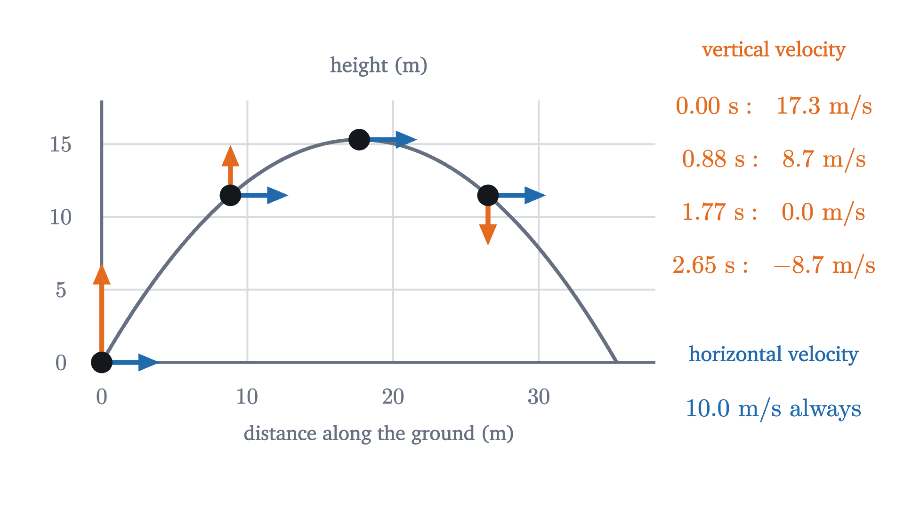
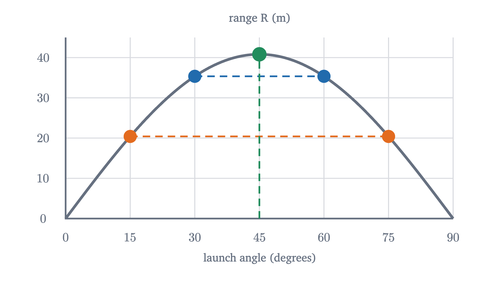
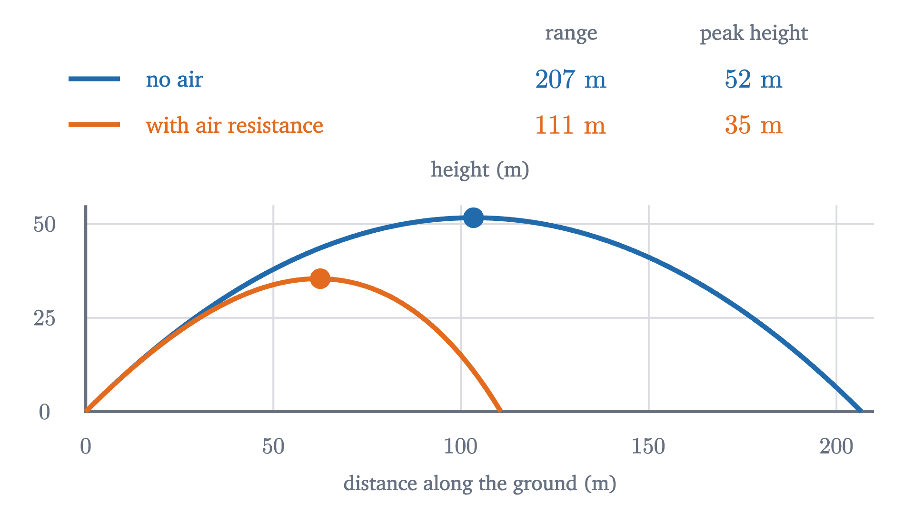

Projectile motion: dropped and fired bullets land together
Gravity acts only on the vertical part of a projectile's motion. From that come the parabola, the time of flight, the range, and why 45 degrees goes farthest.
AssumesPosition, velocity and acceleration: reading motion graphsNewton's second law, F = ma: what force really does
A rifle is held level, 1.5 m above flat ground, and fired. At the instant the bullet leaves the barrel, a second bullet is dropped from the same height. One of them is moving at 400 m/s and will come down two hundred meters away; the other falls at your feet. Which hits the ground first?
Pause and try
Commit to an answer and a reason before reading on: the dropped bullet, the fired bullet, or neither.
Show answerHide answer
Neither. With air resistance ignored they land at the same instant, about 0.55 s after release. Most people pick the dropped bullet, feeling that the fired one’s speed should hold it up for a while. The animation above runs the same experiment with slower balls, and the rest of the lesson explains why forward speed gives no protection against falling.
What the strobe picture shows
In the animation the two balls leave a ledge 4.9 m high. Read the heights of the rings. After 0.2 s both balls have fallen 0.20 m; after 0.4 s, 0.78 m; after 0.6 s, 1.76 m; after 1.0 s, 4.9 m, and both are on the ground. These are the distances $\tfrac12 g t^2 = 4.9t^2$ that a body dropped from rest falls in $t$ seconds, where $g = 9.8$ m/s² is the acceleration of free fall. The fired ball falls exactly as if it had been dropped.
Now read the fired ball’s horizontal positions: 1.2 m, 2.4 m, 3.6 m, and 6 m at landing. It covers 0.6 m in every tenth of a second, which is a steady 6 m/s, exactly as if gravity were absent.
So the fired ball seems to be doing two simple things at once: moving sideways at constant velocity, and falling like a dropped ball. Neither motion takes any notice of the other. That is a strong claim, and a picture of one experiment does not prove it. Newton’s second law does.
Why the two motions are independent
The second law says that the net force on an object equals its mass times its acceleration, and that this holds separately along each of two perpendicular axes: $\sum F_x = ma_x$ and $\sum F_y = ma_y$. Take $x$ horizontal, in the direction the ball is fired, and $y$ vertically upward.
Once the ball is in the air, and if we neglect air resistance, exactly one force acts on it: its weight, of magnitude $mg$, straight down. Whatever threw the ball stopped pushing when the ball left it. The weight has no horizontal component, so
Look at what each equation contains. The vertical one says the vertical velocity changes at the rate $-g$, and it mentions neither the horizontal position nor the horizontal velocity. A ball moving sideways at 6 m/s, a bullet moving at 400 m/s and a ball not moving sideways at all obey the same vertical equation, and if they start with the same height and the same vertical velocity (zero), they have the same height at every later moment. The horizontal equation says the horizontal velocity never changes, and it does not mention the vertical motion.
The independence is a consequence of this particular force, and it is worth knowing how it could fail. If the force on the ball had a horizontal part that depended on the vertical motion, the two equations would be tied together. Air resistance does exactly that, as we will see at the end.
The equations of a projectile
To use the idea we need the two one-dimensional motions as formulas. Both are motions with constant acceleration, and for those the earlier lesson on motion graphs derived, from the area under a velocity graph, that an object starting at position $x_0$ with velocity $v_0$ and constant acceleration $a$ has
We also need the starting velocity along each axis. A launch at speed $v_0$ and angle $\theta$ above the horizontal is an arrow of length $v_0$ tilted at $\theta$. It is the hypotenuse of a right triangle whose horizontal side is $v_0\cos\theta$ and whose vertical side is $v_0\sin\theta$; those two sides are the horizontal and vertical components of the launch velocity.
The fired ball of the opening is the case $\theta = 0$, launched from height 4.9 m: $x = 6t$ and the height is $4.9 - 4.9t^2$, which is zero at $t = 1$ s whatever the 6 is replaced by.
Here is a more typical case, the one in the last animation: a ball kicked from the ground at $v_0 = 20$ m/s and $\theta = 60°$. Its velocity components at launch are $20\cos 60° = 10$ m/s and $20\sin 60° = 17.3$ m/s. The vertical motion decides how long it stays up. It rises until $v_y = 0$, which happens when $17.3 - 9.8t = 0$, at $t = 1.77$ s, and by then it has climbed to $y = 17.3(1.77) - 4.9(1.77)^2 = 15.3$ m. It returns to the ground when $y = 0$ again: $t\,(17.3 - 4.9t) = 0$ gives $t = 3.53$ s, twice the time to the top. All that while it has been moving sideways at 10 m/s, so it lands $10 \times 3.53 = 35.3$ m away.
Pause and try
Repeat the calculation for the same kick speed at a lower angle: $v_0 = 20$ m/s and $\theta = 30°$. Find the time of flight, the greatest height and the landing distance. Compare the landing distance with the $60°$ kick.
Show answerHide answer
The components swap: $v_x = 20\cos 30° = 17.3$ m/s and $v_y = 20\sin 30° = 10$ m/s at launch. Top of the flight: $10 - 9.8t = 0$, so $t = 1.02$ s, at height $10(1.02) - 4.9(1.02)^2 = 5.1$ m. Landing: $t = 2.04$ s, at $x = 17.3 \times 2.04 = 35.3$ m. The low kick is in the air for less time and rises a third as high, and it lands in the same place as the high one. The reason comes out of the general formulas below.
The path is a parabola
There is a second way to read the equation $y = (v_0\sin\theta)t - \tfrac12 gt^2$, and it makes the shape of the path visible. The first term alone is where the ball would be if gravity were switched off: moving along its line of aim at a steady $v_0$. The second term is the distance a dropped ball falls in the same time.
To get the curve as an equation in $x$ and $y$ alone, eliminate the clock. From the horizontal motion $t = x/(v_0\cos\theta)$, which is allowed when $\cos\theta \neq 0$, that is, when the launch is not straight up. Substituting into $y$:
This has the form $y = bx - cx^2$ with $c > 0$, the equation of a parabola opening downward. The first term, $x\tan\theta$, is the line of aim, and the second is the fall below it.

Time of flight, height and range
The two worked kicks followed the same three steps, so we can run those steps once with letters. The results hold for a projectile that lands at the height it was launched from.
Since $2\sin\theta\cos\theta = \sin 2\theta$ (the double-angle identity), the range is often written $R = v_0^2\sin 2\theta/g$. A units check: $v_0^2/g$ is (m²/s²)/(m/s²) = m, and the trigonometric factors are pure numbers, so $R$ and $H$ are lengths; $v_0/g$ is (m/s)/(m/s²) = s, so $T$ is a time.
The proof of part 4 also says why $60°$ and $30°$ tied. Range is horizontal speed times time aloft, and time aloft is proportional to vertical launch speed. The $60°$ kick has vertical speed 17.3 and horizontal speed 10; the $30°$ kick has them the other way round. The product is the same. At $45°$ the two components are equal, and a product of two numbers whose squares have a fixed sum is largest when the numbers are equal.
Pause and try
A ball is kicked at 20 m/s at angles of $15°$, $30°$, $45°$, $60°$ and $75°$. Before watching the next animation, rank the five landing distances, and say which kick is in the air longest.
Show answerHide answer
$45°$ lands farthest, at $20^2/9.8 = 40.8$ m. $30°$ and $60°$ tie at 35.3 m, and $15°$ and $75°$ tie at $40.8 \times \sin 30° = 20.4$ m. The $75°$ kick is in the air longest, 3.94 s, because time of flight depends only on the vertical launch speed.

Worked examples
What air resistance changes
Every result above assumed that gravity is the only force. For a shot put, or a ball tossed across a room, that is accurate to a percent or so. For a fast, light object it is not. Air resistance is a force directed against the velocity, and for a ball at sporting speeds its size grows roughly as the square of the speed.

Four things change, and each can be read off the figure or the force.
- The range and the height shrink. In this model the baseball’s range drops from 207 m to about 111 m. Real fly balls hit this hard travel about 120 m.
- The path is no longer symmetric. The ball loses horizontal velocity all the way along, so it comes down more steeply than it went up, and the highest point is past the middle of the range.
- The best angle is below $45°$. A flatter launch spends less time fighting the air. For this model the greatest range is at about $40°$.
- The two motions are no longer independent. The drag force points against the velocity and its size depends on the total speed, so the vertical equation now contains the horizontal velocity. A fast horizontal bullet feels a larger vertical drag while it falls than a dropped one does, and it lands slightly later. The dropped and fired bullets land together only in the model without air.
The model has other boundaries. The ground was taken to be flat and $g$ constant; for an artillery shell that travels tens of kilometers, or a rocket, the Earth’s curvature and the weakening of gravity with height both matter. And if the launch and landing heights differ, as in the cliff example, the component equations still hold but the level-ground formulas, and with them the $45°$ rule, do not.
Check yourself
A soccer ball is kicked at an angle and air resistance is negligible. At the highest point of its path, which statement is true?
In the cliff example the landing speed could have been found without the angle at all. The next lesson, on conservation of energy, explains why.
Problems
Use $g = 9.8$ m/s² and neglect air resistance unless a problem says otherwise.
Problem 1
A ball rolls off the edge of a table 1.2 m high at 2.5 m/s. How long is it in the air, and how far from the foot of the table does it land?
Show solutionHide solution
Origin on the floor below the edge, $y$ up, $x$ along the ball’s direction. Vertically the ball starts at 1.2 m with $v_y = 0$: $0 = 1.2 - 4.9t^2$, so $t = \sqrt{1.2/4.9} = 0.495$ s. Horizontally $x = 2.5 \times 0.495 = 1.24$ m.
Problem 2
A ball is kicked from level ground at 18 m/s and $35°$. Find its time of flight, range and greatest height.
Show solutionHide solution
$v_0\sin\theta = 18 \times 0.5736 = 10.32$ m/s and $v_0\cos\theta = 18 \times 0.8192 = 14.74$ m/s. $T = 2(10.32)/9.8 = 2.11$ s. $R = 14.74 \times 2.11 = 31.1$ m (the formula $18^2\sin 70°/9.8$ gives the same). $H = 10.32^2/(2 \times 9.8) = 5.44$ m.
Problem 3
For the kick in the previous problem, find the ball’s speed at the top of its path, and its speed and direction of motion at the instant it lands.
Show solutionHide solution
At the top $v_y = 0$, so the speed is $v_x = 14.74$ m/s. At landing $t = T$, and $v_y = v_0\sin\theta - gT = v_0\sin\theta - 2v_0\sin\theta = -v_0\sin\theta = -10.32$ m/s, while $v_x = 14.74$ m/s. The speed is $\sqrt{14.74^2 + 10.32^2} = 18$ m/s, the launch speed, and the direction is $35°$ below the horizontal. On level ground a projectile lands with its launch speed, at its launch angle mirrored downward.
Problem 4
A stone thrown horizontally from the top of a cliff hits the sea 2.0 s later, 24 m from the base of the cliff. Find the speed of the throw, the height of the cliff, and the stone’s speed and direction at impact.
Show solutionHide solution
Horizontal: $24 = v_0 \times 2.0$, so $v_0 = 12$ m/s. Vertical: the stone falls $\tfrac12(9.8)(2.0)^2 = 19.6$ m, the height of the cliff. At impact $v_x = 12$ m/s and $v_y = -9.8 \times 2.0 = -19.6$ m/s, so the speed is $\sqrt{12^2 + 19.6^2} = 23.0$ m/s, directed at $\tan^{-1}(19.6/12) = 58.5°$ below the horizontal.
Problem 5
Show that for a projectile on level ground, $H/R = \tfrac14\tan\theta$. What is the greatest height of a $45°$ launch as a fraction of its range? At what launch angle does a projectile rise exactly as high as it travels?
Show solutionHide solution
$\dfrac{H}{R} = \dfrac{v_0^2\sin^2\theta}{2g} \cdot \dfrac{g}{2v_0^2\sin\theta\cos\theta} = \dfrac{\sin\theta}{4\cos\theta} = \tfrac14\tan\theta$. At $45°$, $\tan\theta = 1$ and $H = R/4$: the 20 m/s kick at $45°$ has $R = 40.8$ m and $H = 10.2$ m. $H = R$ requires $\tan\theta = 4$, that is, $\theta = 76.0°$. The speed and $g$ cancel, so these statements hold for any launch speed, on any planet.
Problem 6
A zookeeper aims a tranquilizer dart straight at a monkey hanging from a branch. At the instant the dart is fired, the monkey lets go and drops. Show that the dart hits the monkey whatever the dart’s speed, provided the dart reaches the monkey’s vertical line before either hits the ground.
Show solutionHide solution
Use the “line of aim minus a free fall” description. Let $P$ be the monkey’s starting point. With gravity off, the dart would travel along the straight line of aim and reach $P$ at some time $t^*$ (equal to the horizontal distance to the monkey divided by $v_0\cos\theta$). With gravity on, the dart at time $t^*$ is below $P$ by $\tfrac12 g t^{*2}$, directly under it, since gravity does not change the horizontal motion. The monkey started at $P$ at rest and has been falling for the same time $t^*$, so it is also $\tfrac12 g t^{*2}$ below $P$. Dart and monkey are at the same point at the same time. A faster dart only makes $t^*$ smaller, so they meet higher up; the argument fails only if $\tfrac12 g t^{*2}$ exceeds the monkey’s starting height, in which case both reach the ground first.
Problem 7
A stone is thrown at speed $v_0$ from a height $h$ above level ground. (a) Prove that its speed when it reaches the ground is $\sqrt{v_0^2 + 2gh}$, whatever the launch angle. (b) Check this against the cliff example in the lesson.
Show solutionHide solution
(a) Let the launch angle be $\theta$ (positive, zero or negative). The horizontal velocity stays $v_x = v_0\cos\theta$. The vertical motion has constant acceleration $-g$ and vertical displacement $-h$, and for constant acceleration $v^2 = v_{\text{start}}^2 + 2a\,\Delta y$, so $v_y^2 = v_0^2\sin^2\theta + 2gh$. The landing speed satisfies
using $\sin^2\theta + \cos^2\theta = 1$. The angle has dropped out. (b) $\sqrt{15^2 + 2(9.8)(20)} = \sqrt{617} = 24.8$ m/s, as found there.
Problem 8
From the 20 m cliff of the lesson, with the same throwing speed of 15 m/s, compare the horizontal distances reached by throws at $45°$ and at $30°$. What does the result say about the $45°$ rule?
Show solutionHide solution
Use $y = 20 + (v_0\sin\theta)t - 4.9t^2 = 0$ for each. At $45°$: both components are $15 \times 0.7071 = 10.61$ m/s. $t = \dfrac{10.61 + \sqrt{10.61^2 + 392}}{9.8} = \dfrac{10.61 + 22.46}{9.8} = 3.37$ s, and $x = 10.61 \times 3.37 = 35.8$ m. At $30°$: $v_{y0} = 7.5$ m/s and $v_x = 12.99$ m/s. $t = \dfrac{7.5 + \sqrt{7.5^2 + 392}}{9.8} = \dfrac{7.5 + 21.17}{9.8} = 2.93$ s, and $x = 12.99 \times 2.93 = 38.0$ m. The $30°$ throw goes farther. When the landing point is below the launch point the stone has extra time in the air however it is thrown, so horizontal speed is worth more than it is on level ground, and the best angle falls below $45°$. Part 4 of the theorem assumed equal launch and landing heights, and that hypothesis cannot be dropped.